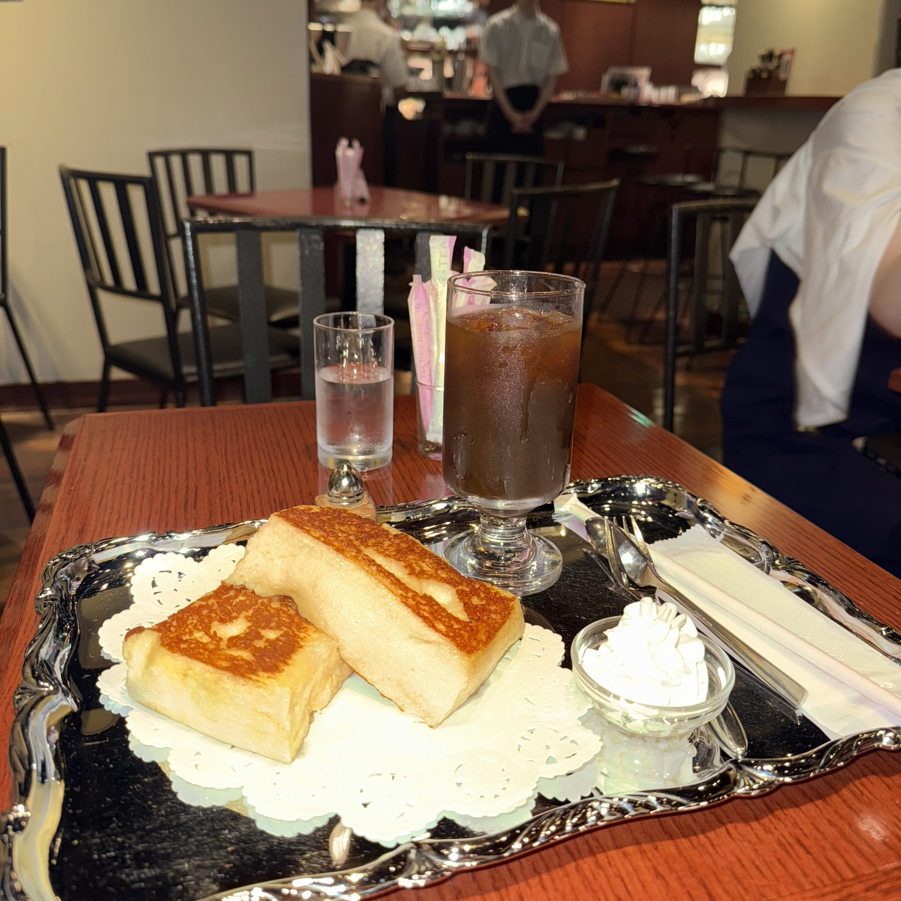
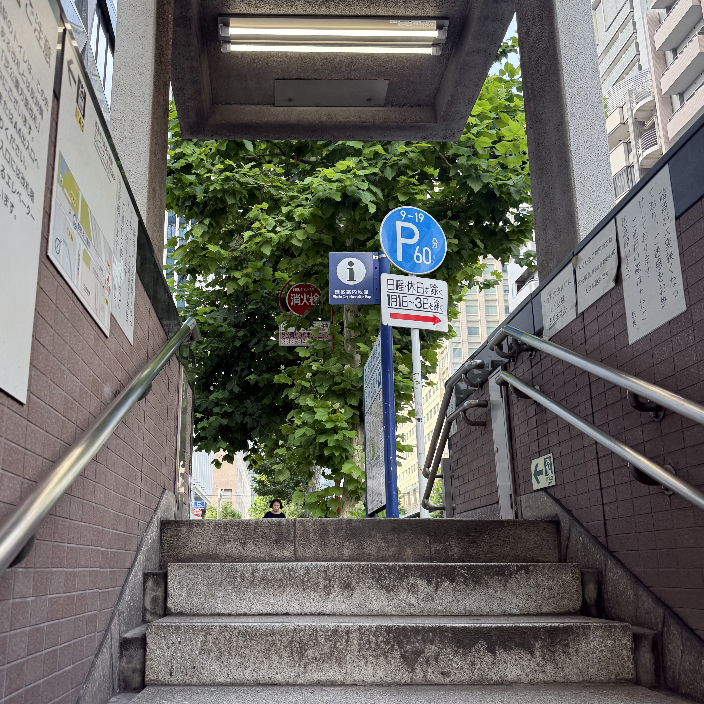
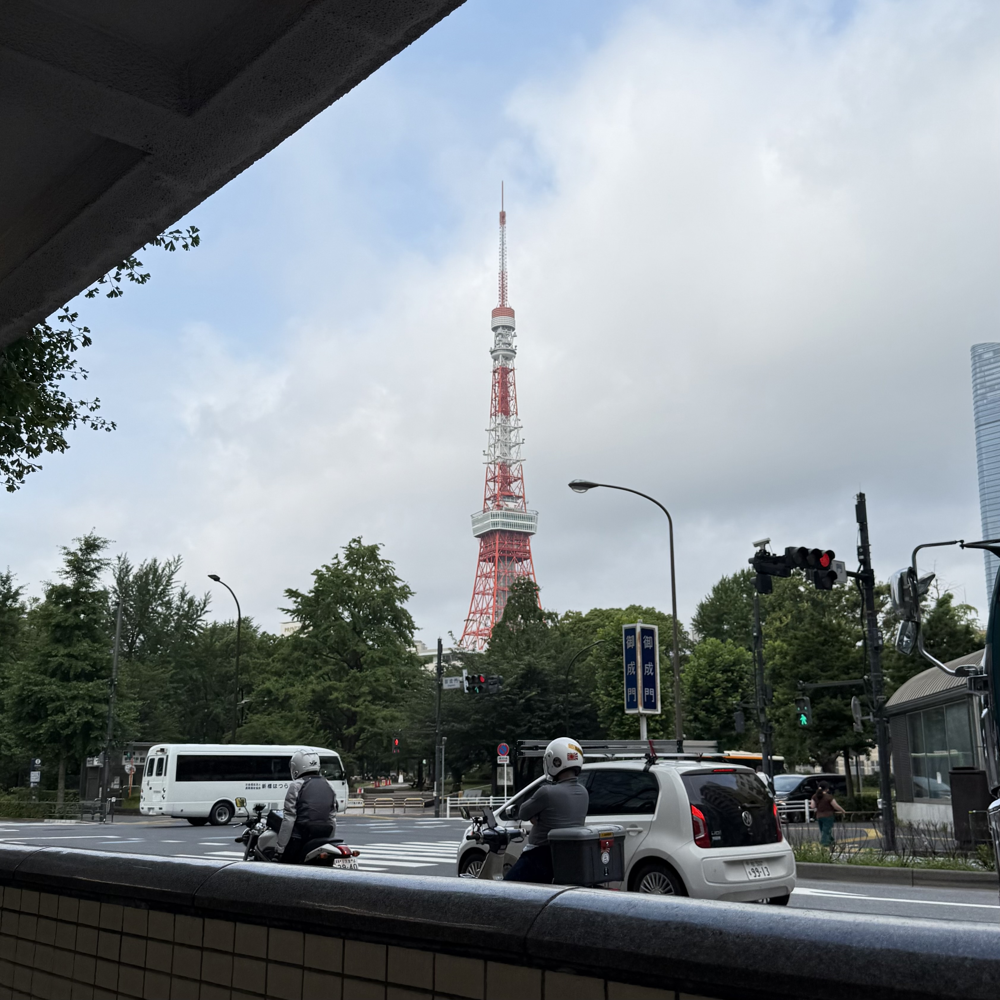
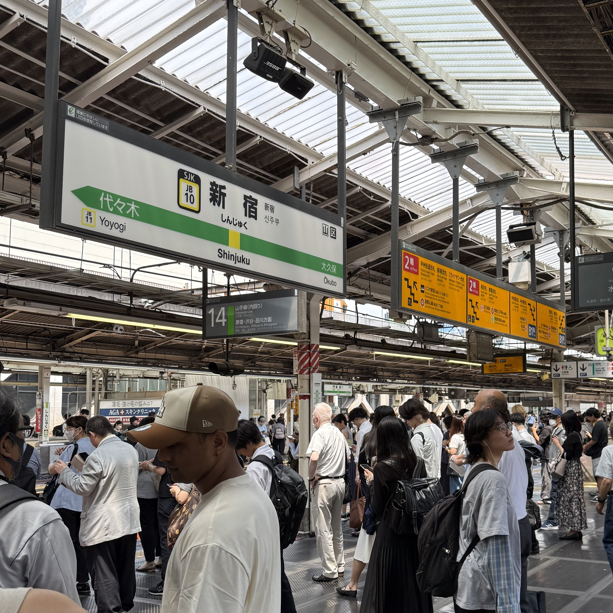
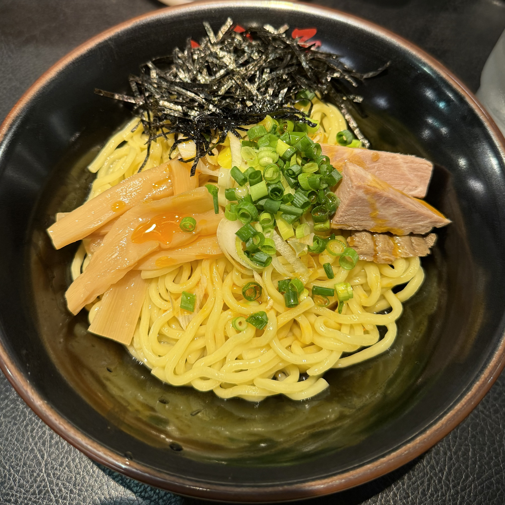
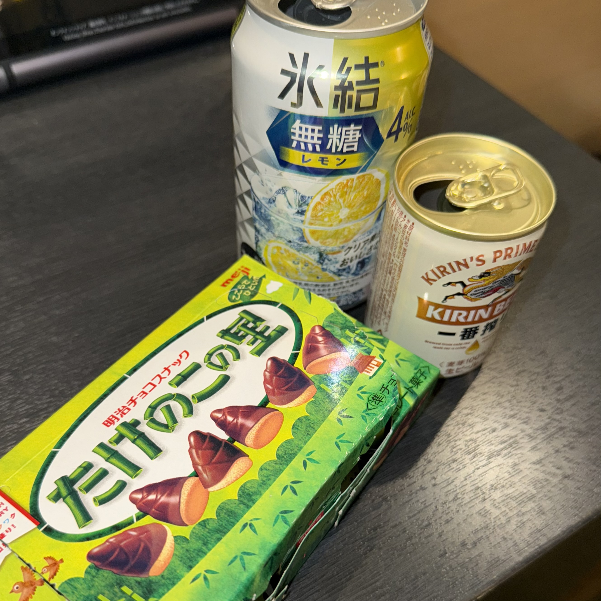
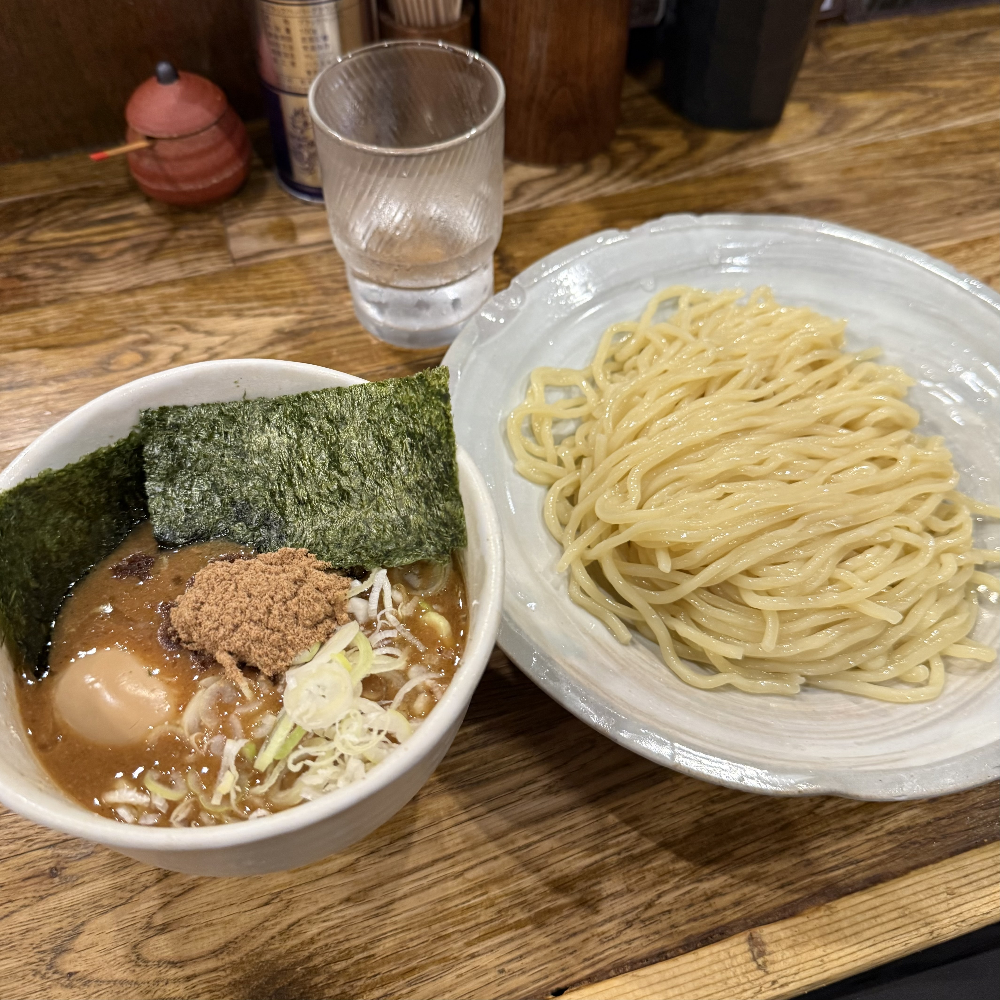
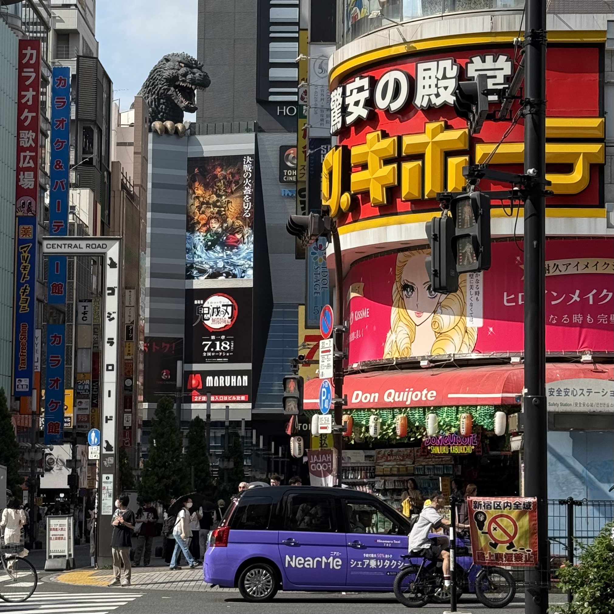
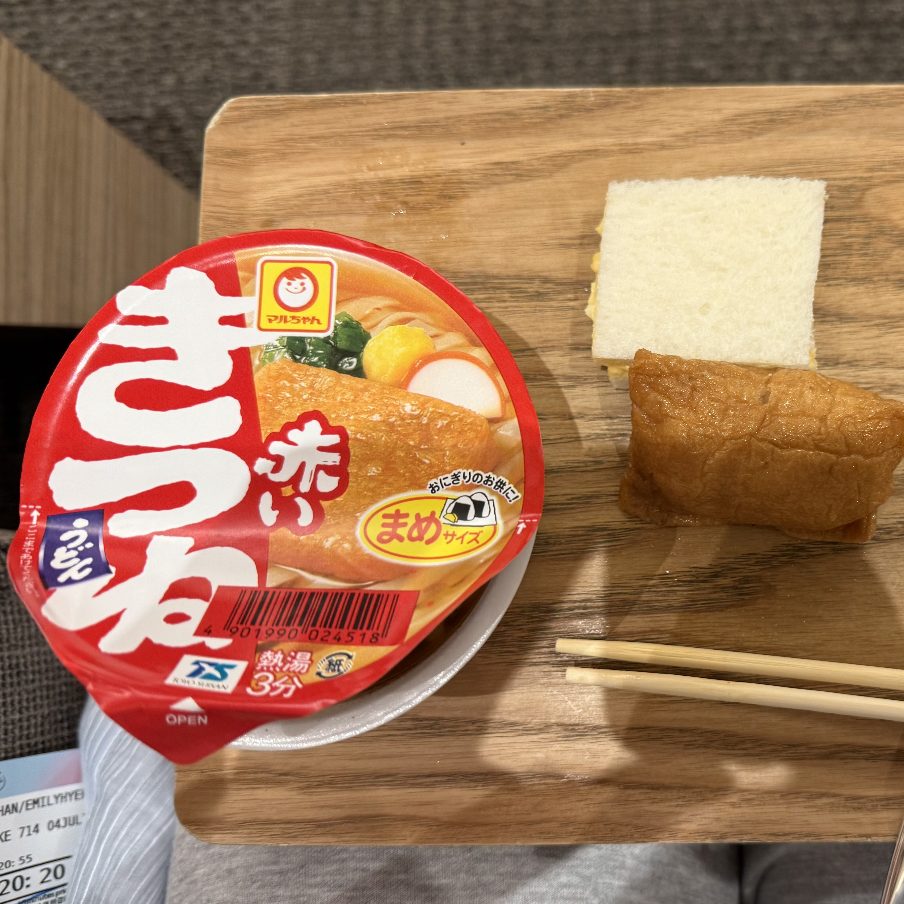
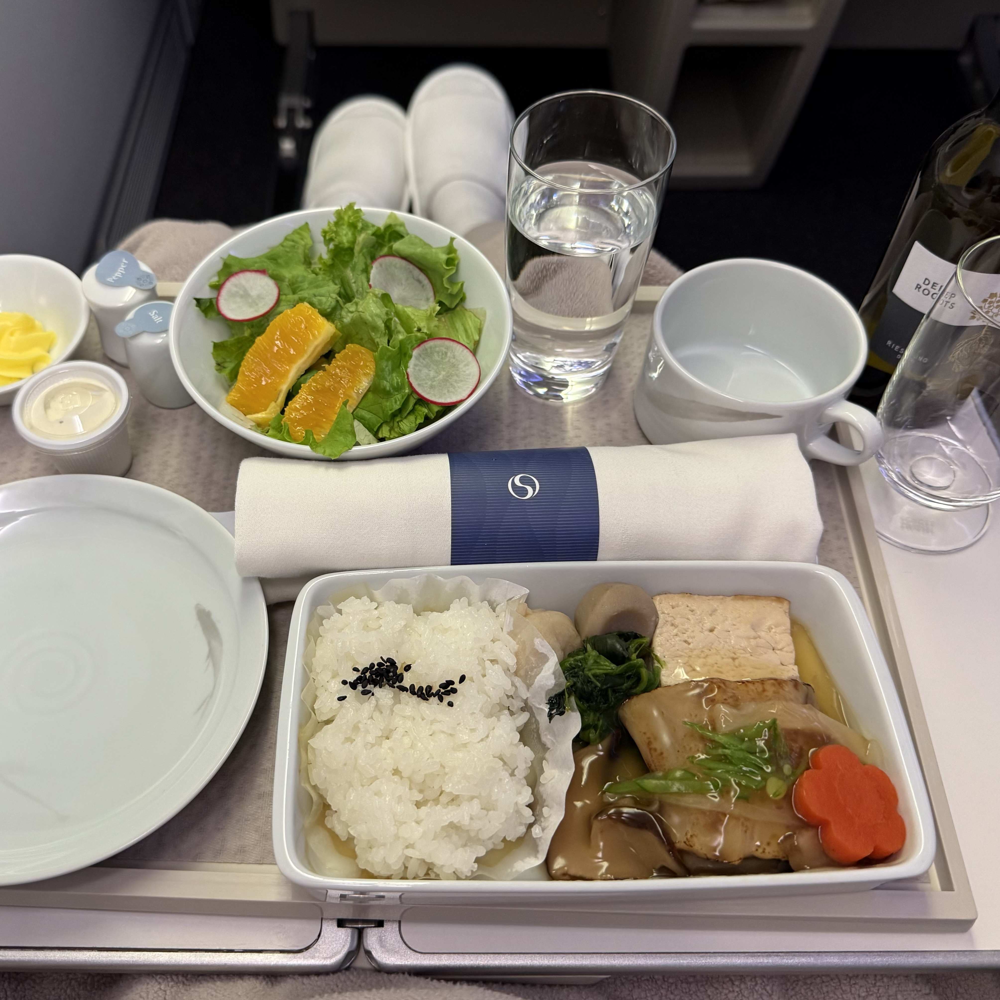

Then I visited the Meiji Shrine. Since I was traveling city to city, I apperciated the nature in the morning. Then I went to a brunch place in Shinjuku. THE FRENCH TOAST WAS SO GOOD AND FLUFFY. I would go again with my friend.


Tokyo, Japan 🇯🇵 🗼

As the last destination of the Japan trip, I chose to visit Tokyo for 2 days. The first day, I stopped by a station where you can see the Tokyo tower from the station stairs.

Then I visited the Meiji Shrine. Since I was traveling city to city, I apperciated the nature in the morning. Then I went to a brunch place in Shinjuku. THE FRENCH TOAST WAS SO GOOD AND FLUFFY. I would go again with my friend.


I went to go shopping and look for souvenir to bring back to Korea and the States.

After another 10,000 steps, I went to a local restaurant that only sells 'abura soba'/oil noodles. I was scared to eat here alone because I was the only traveler and girl in the store. They were all men after work having a late dinner. I was scared but also thought I found the local store.

Even though I was very tired at this point, I had to try everything. So, I got a trending drink and beer with chocolate snacks.
Next Day

This day also started with a heavy meal. But since it was the last day, I wanted to have one of my favorite Japanese menu: 'Tsukemen'. It is a dipping noodle and this place in Tokyo was the best I every tried. Then I got busy with last minute shopping. Not knowing that I missed my flight back to Seoul...

After I finished all my shopping, I check my flight ticket and it was 2 hours before the flight. However, it was impossible to jump to the airport from the heart of Tokyo. So, I changed my flight to the late night one and safely returned to Seoul.


This 5 day trip was hectic and VERY busy. However, traveling alone and to 4 different cities was a new experinece I can never do. So, I really enjoyed all the walking and heat.